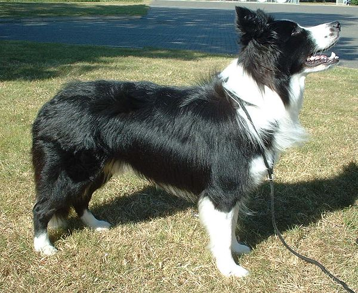
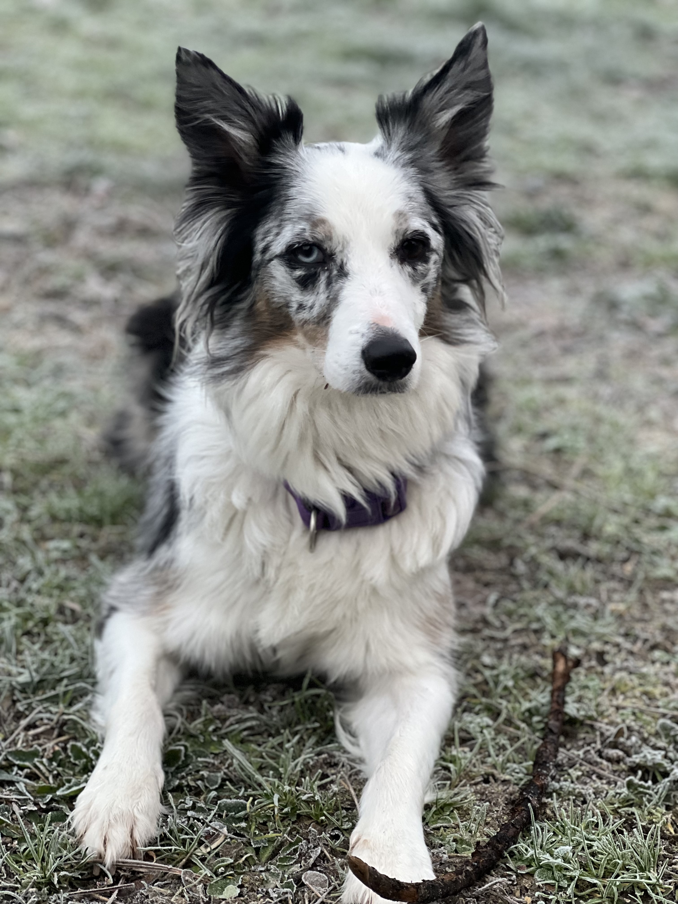
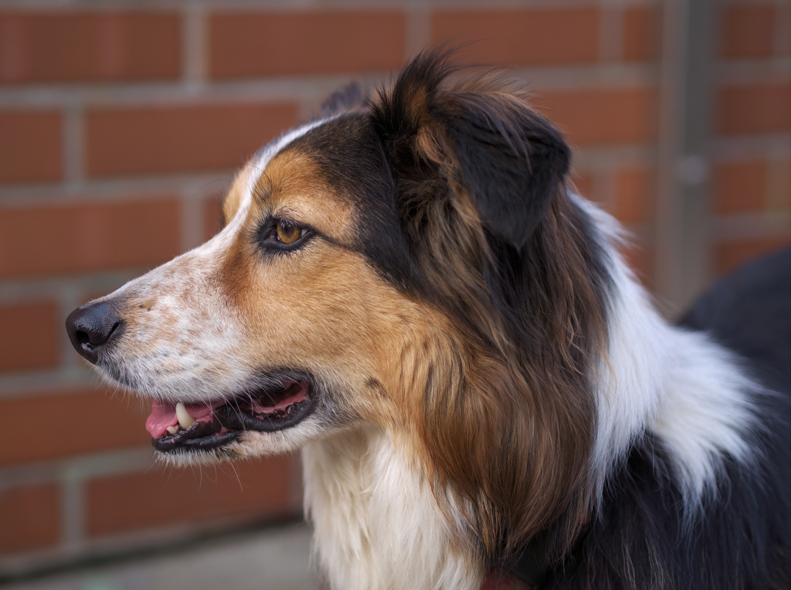

The world's smartest dog breed — a page about the herding dog that turned out to be my favorite topic.

The Border Collie is a herding dog (FCI 297) that became the world's most popular working sheepdog — and, by most tests, the smartest dog breed on earth. Bred from the border hills of England and Scotland, they're distinguished by intense focus, a "cattle sense" that can stop a moving animal with just a stare, and an almost unsettling ability to pick up new tricks fast.
Border Collies come in a few classic markings. The traditional working color is black and white, but the breed has expanded well past that.
Black & white is the classic. Variations include "black ticked" (tan points) and brown, red, or blue/white — and Australian Red.
Speckled blue-gray with white — a striking, mottled look. (Also comes in red merle.)
Black, white, and tan — tan markings on the face and legs.


Research gathered in border-collie-research/ —
wiki data + photo collection.